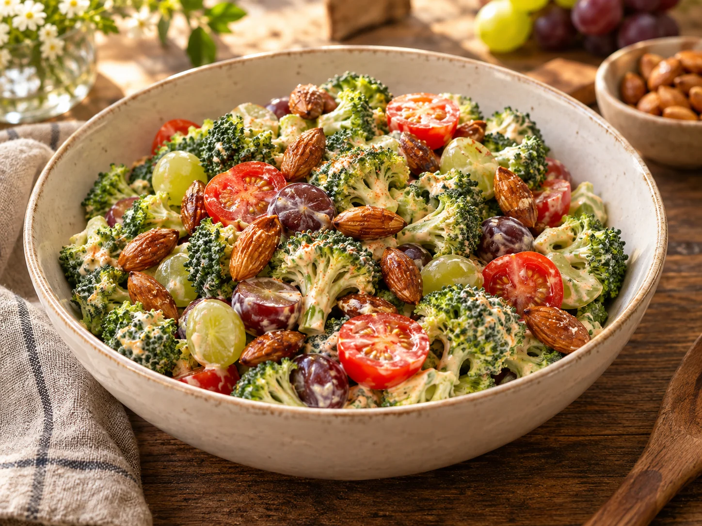

Was Kleines dazu · Salate
Brokkoli Salat
Von Nelli F.

Knackiger Brokkoli, süße Weintrauben und saftige Cherrytomaten treffen auf würzige Honig-Salz-Mandeln. Das cremige Paprika-Dressing verbindet alles zu einem frischen Salat mit süß-herzhafter Note.
Zutaten
1Brokkoli, in kleinen Röschen
250 gCherrytomaten, halbiert
250 gKernlose Weintrauben, halbiert
150 gHonig-Salz-Mandeln, fertig gekauft
4–5 ELMayonnaise
1 Pck.Paprika-Salatkrönung
1 TLZucker
Nach GeschmackSalz und Pfeffer
Zubereitung
- Den Brokkoli waschen, sehr gut abtropfen lassen und in kleine, mundgerechte Röschen teilen. Cherrytomaten und Weintrauben waschen und halbieren.
- Mayonnaise, Paprika-Salatkrönung und Zucker zu einem cremigen Dressing verrühren. Mit Salz und Pfeffer abschmecken.
- Brokkoliröschen, Cherrytomaten und Weintrauben in einer großen Schüssel mit dem Dressing vermengen.
- Die fertigen Honig-Salz-Mandeln kurz vor dem Servieren unterheben oder über den Salat streuen.
Tipp
Der Salat darf vor dem Servieren etwa 20 Minuten durchziehen. Die Mandeln erst zum Schluss hinzufügen, damit sie schön knackig bleiben.